歡迎來到 PHP雲端ERP 的世界
PHP 是開發 雲端ERP 應用程式的工具組。提供簡易的介面和邏輯結構來使用豐富的函式庫，其目的是讓你加 快開發速度。使用 PHP 只需要寫少少的程式，創造力可專注在專案開發。
雲端ERP 使用手冊目錄
貳、基本資料建立
一、管理維護管理系統
1.使用權限設定
■程式代號：ADMI05
■輸入畫面：
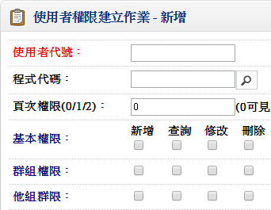 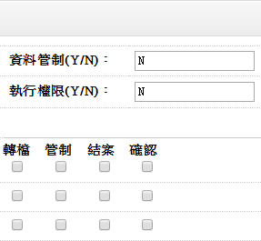- ■注意事項：
- 在系統運作之前，應該先行計劃公司內有那些人員或那些部門單位需要直接使用電腦執行本系統。
- 確定後，必須對於每一需要使用之人員或部門單位賦予一唯一之『使用者代碼』，然後利用「管理維護系統」中之『登錄者代號建立作業』、『群組資料建立作業』及『使用者權限建立作業』一一加以輸入。
- 對於所輸入之各使用者，應該對其在公司內之職掌予以明確界定，然後對於每一使用者逐一檢討其對於每一項作業之使用權限。
二、基本資料管理系統
1.公司資料建立作業
■程式代號：CMSI14
■輸入畫面：
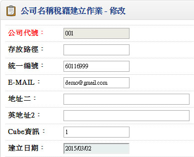 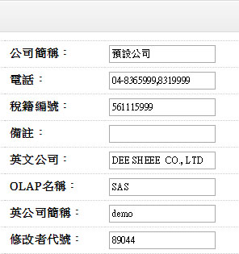- ■注意事項：
- 若在本系統之前，電腦已安裝有本系列軟體中之其他系統，且已執行過『公司資料建立作業』，則本系統可以不必重複設定，直接沿用即可。
2.廠別資料建立
■程式代號：CMSI02
■作業目的：
- 廠別資料為庫存，或商品異動相關報表資料的篩選條件
- 為配合全球ERP的管理，如果你只有單一製造廠管理，亦請您設定一個廠別代號來標示，在本系統的銷貨及採購系統的異動單據（銷貨單、銷退單、進貨單、退貨單…等）輸入時必須指定廠別
■輸入畫面：
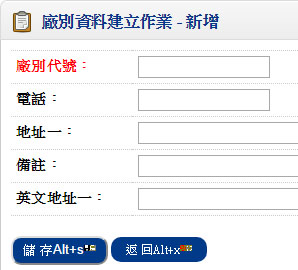 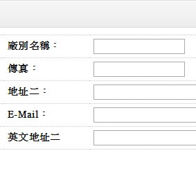- ■注意事項：
- 本系統可以支援多廠別帳款及付款的管理。
3.幣別匯率資料建立
■程式代號：CMSI06
■作業目的：對作外幣交易時，每天之銀行買進賣出匯率需先行建立，至於海關買進賣出匯率可期間整批產生。單價；金額；單位成本及成本金額可依不同幣別設定不同取位
■輸入畫面：
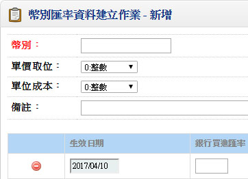 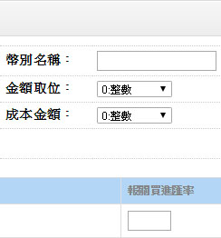- ■注意事項：
- 本國幣別亦應設定其幣別，而其匯率則固定為１。
4.註記/簽核資料建立作業
■程式代號：CMSI17
■作業目的：對常用之註記及簽核可先行建立,可於列印憑證或報表取用
■輸入畫面：
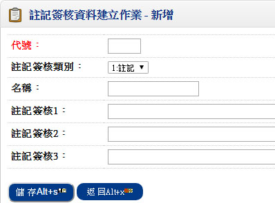- ■注意事項：
- 對於系統所提供的憑證或報表列印，是可由使用者自訂其簽核程序（經理核准、主任核准、製表）及憑證報表表尾的註記。
- 請先將常用的註記及簽核格式編碼於本作業建檔。
三、應收管理系統(訂單管理系統)
1.客戶資料建立作業
■程式代號：COPI01
■輸入畫面：
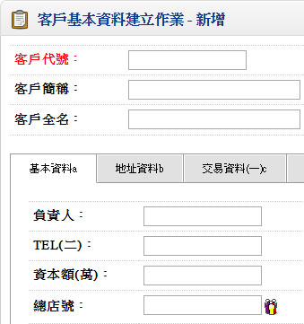 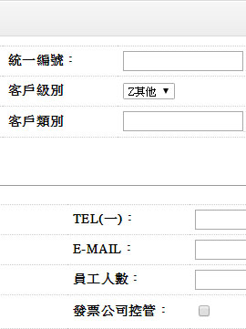▼
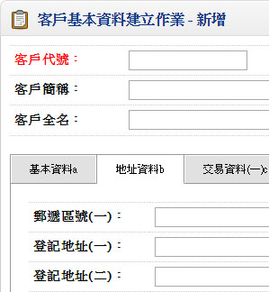 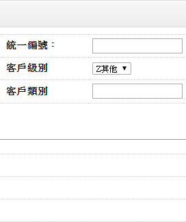▼
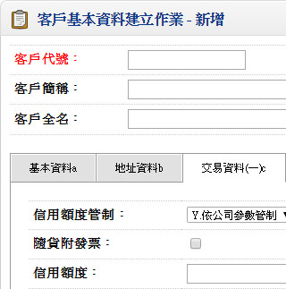 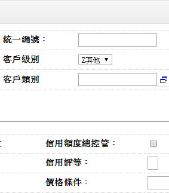▼
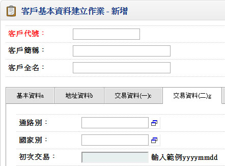▼
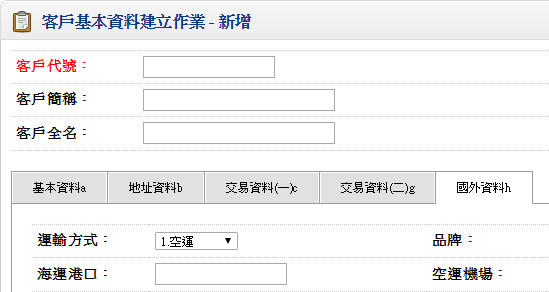- ■作業注意事項：
- 建立本資料前,必須將以下資料先行建檔完成:
編碼原則設定:基本資料管理系統->2.客戶編碼
部門資料:基本資料管理系統
業務員資料:基本資料管理系統->職務類別建立->業務
交易對象建立作業:基本資料管理系統
幣別匯率建立作業:基本資料管理系統
- 若有購買出口管理系統者,海運公司,空運公司,報關行,驗貨公司請先於採購管理系統之廠商基本資料先行建立
- ■欄位說明：
- 客戶代號
- 可依「自動編碼開窗作業」預設客戶代號。請於基本資料管理系統建立作業編碼原則設定客戶編碼先行定義
- 總店號
- 與分店或分廠交易時向總公司請款,在此輸入總公司之客戶代號
- 總公司請款
- 總店號不為空白時，才可輸入「總公司請款」
- 表示應收帳款結帳時，此分店或分廠不產生結帳單,由總公司結帳
- 付款絛件
- 可空白,註記欄位
- 新增時預設初值為付款條件=付款條件名稱
- 最近交易日
- 本欄位可由銷貨單確認來更新
- 取價順序
- 新增時預設順序為 142
- 結帳日期
- 此欄位為應收應付帳款管理系統需求欄位，對某些客戶來說規定請款的週期，譬如以26日為截止點，即上月27日至本月26日間的銷貨，可於月底請款，我們稱此種結帳方式為依客戶結帳日期結帳，請你於本欄位輸入結帳日
- 銀行帳號
- 指客戶付款的銀行帳號
- 帳款科目
- 客戶應收帳款的科目代號，此科目不得為統制帳戶，一般應收帳款如果區分到客戶別，則應於本欄位明訂，如果只有一個彙總科目，則無須輸入
- 本欄位為自動分錄系統需求資料
- 票據科目
- 客戶應收票據的科目代號，此科目不得為統制帳戶，一般應收票據如果區分到客戶別，則應於本欄位明訂，如果只有一個彙總科目，則無須輸入
- 本欄位為票據系統的需求資料
2.單據性質設定作業
■程式代號：ACRI01
■作業目的：凡於應收系統所使用的單據如結帳單、預收款單、收款單等，必須先於本作業編設單據代碼及相關基礎資料，以方便日後異動單據輸入
■輸入畫面：
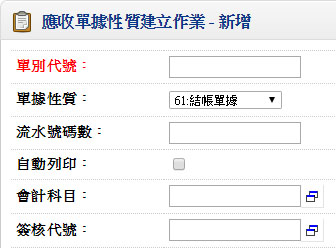 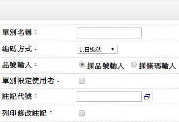- ■作業注意事項：
- 關於單別設計上是可以區別帳款性質來識別，如果帳款繁多，但是從單別能區分出使用性質
- 單據經設定請勿隨意修改，必須修改時，請保持在單一使用者狀況修改，單據性質將影響帳款的統計，千萬不得造成單據不同時區，所代表的性質不同
- 設計單據性質時如果同時要上自動分錄系統則單據設定同時就要能將應收帳款科目定義，避免單別的考慮不完全
- ■欄位說明：
- 單據性質
- 61.結帳單據(銷貨/銷退/自行輸入) 62. 溢收待抵單(收款) 63.收款單 、 64.預收結帳單、65.預收待抵單、66.多角貿易結帳單六種
- 編碼方式
- 1.日編、2.月編、3.流水號、4.手動編號
- 屬於「收款單建立作業」系統自動產生的預收結帳單，其編碼方式不得為『4.手動編號』
- 年碼數
- 編碼方式為日編或月編才需輸入
- 日編:年碼數＋4(4碼表MMDD)＋流水號碼數，不可大於11碼
- 月編:年碼數＋2(2碼表MM)＋流水號碼數，不可大於11碼
- 自動確認
- 單據輸入完成（如結帳單）是否馬上核准（更新相關單據之結帳碼），如果公司的打單與簽核為分工權責者，那就非為自動確認
- 自動列印
- 單據輸入完成是否馬上將該憑證列印出來
- 單別限定使用者
- 單據輸入時設定該單據是否僅允許某此些使用者輸入
- 會計科目
- 本欄位於「自動分錄系統」執行傳票產生時，定義應收帳款科目，假設您設了一種單據為貨款結帳單，專司對客戶銷貨退貨的帳款整理，則預計應收帳款就是會計科目
- 預收待抵單別
- 若單據性質為’64’之預收結帳單才允許輸入